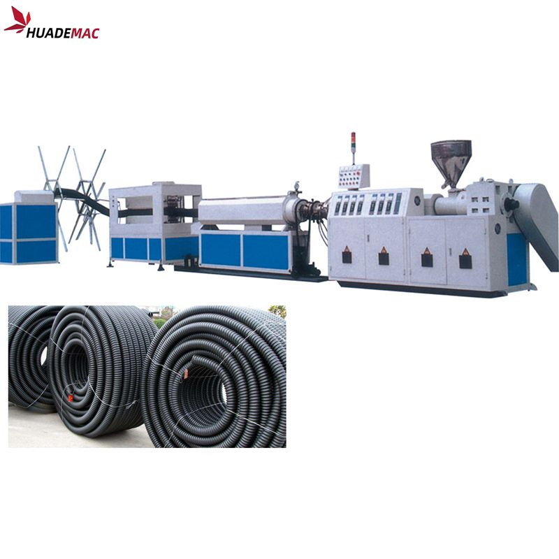
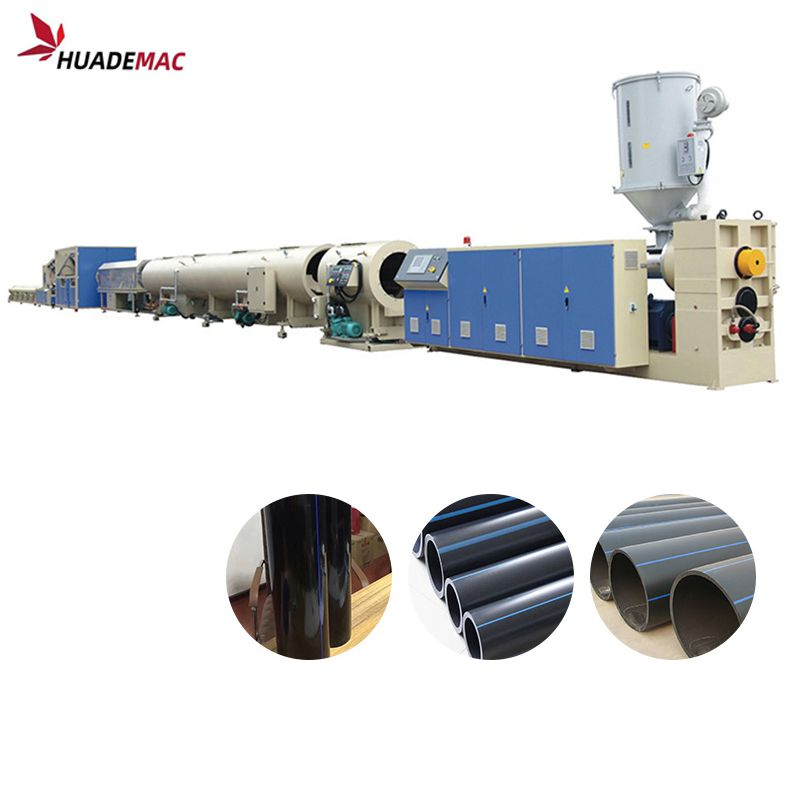
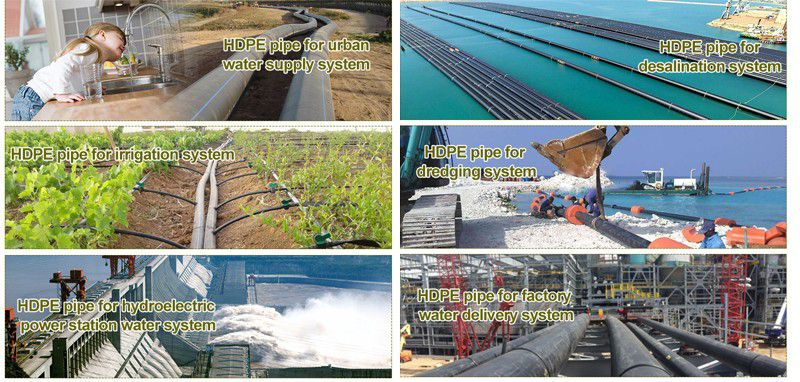
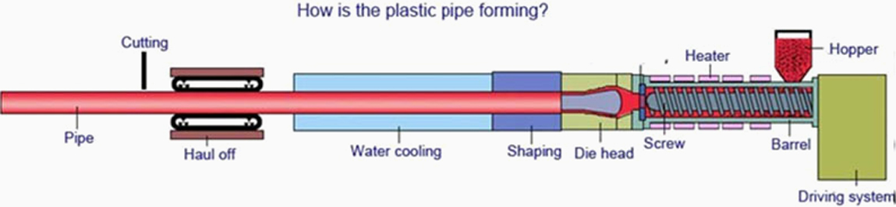

16-1200mm HDPE Pipe Extrusion Line
Produce polyethylene pipe from 16 to 1200 mm using a single-screw extruder.
Inquire about this product Prepare a detailed project brief
Equipment overview
16-1200mm PE HDPE Pipe(tube )Extrusion Line
The extrusion line employ high capacity single screw extruder to ensure stable and high output .
Compact design takes up less room and enables a flexible layout of the assembly line.
Competent for producing pipe with diameters range from 16mm to1600mm.
Customer-oriented design can meet specific requirement of different customers.
All-around technical and comprehensive supports before and after sale services ensure a smooth and care-free operation of this line.
A number of adoptions of automation can precisely control the process thus resulting in a solid quality of final product.
Technical specifications
Reference configurations from the product catalogue. Confirm output, dimensions and equipment selection for your material and project.
| Pipe Range (mm) | 16-63 | 20-110 | 75-250 | 110-315 | 160-450 | 315-630 | 400-800 | 710-1200 |
|---|---|---|---|---|---|---|---|---|
| Extruder Model | 65/33 | 65/33 | 65/33 60/38 | 90/33 65/38 | 120/33 75/38 | 120/33 90/38 | 150/33 | 120/33 90/33 |
| Extruder Motor (Kw) | 37 | 55 | 110 | 132 | 160 | 280 | 355 | 280 160 |
| Max.Capacity(Kg/h) | 120 | 180 | 330 | 380 | 450 | 750 | 900 | 1200 |
Application & Advantage

The civil-use and industrial-use construction inner cold/warm water and water-giving systems;
Public sites, (such as schools, hospitals), gyms(such as swimming pools, playground);
Drinking water systems and food industry management system'
Garden and warm rooms irrigating systems;
Chemical flowing transferring pipe system.
Extrusion Process
Plastics extrusion is a high-volume manufacturing process in which raw plastic is melted and formed into a continuous profile. With the development of economy, more and more plastics are used in people's daily life. Consequently, a large quantity of plastic extruder, plastic extrusion line, plastic extrusion machine are used to process PP, LLDPE, LDPE, HDPE, PVC, ABS, etc. in pipe extrusion, profile extrusion, filament extrusion, film extrusion, sheet extrusion and pelletizing.
We have focused on plastic machinery over 21 years with rich experience and strong technology .top quality and the turn-key service including installation , test running and training workers in your local factory . we are your trustworthy partner !

Equipment video
Ask about this machine
16-1200mm HDPE Pipe Extrusion Line